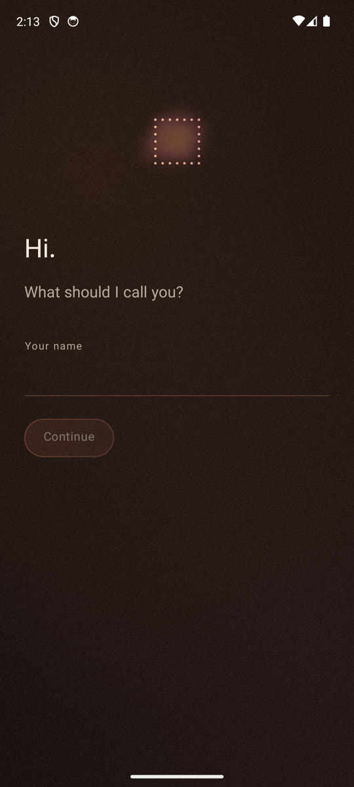
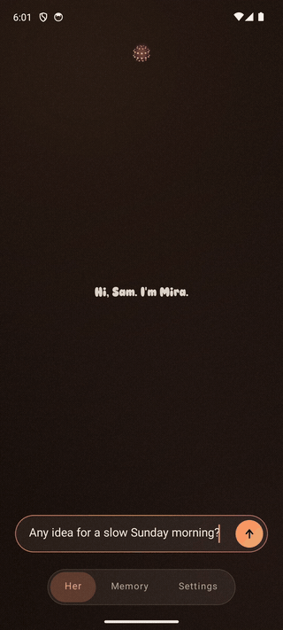
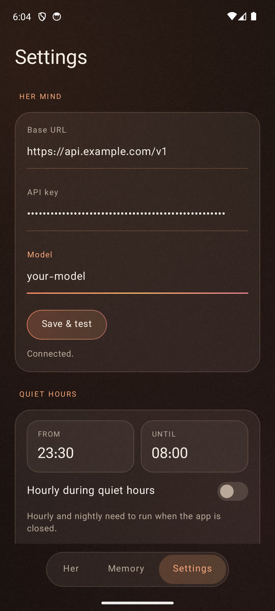

One conversation, forever
Her is not a chat app. There is a single continuous conversation, but you never scroll a thread. She answers in place. History still lives underneath and still feeds her memory; it simply is not on the screen.
Android 10+ · Open source
One conversation for the life of the app. You talk; she remembers, organizes, and follows up. The screen shows only her latest message.



She never pretends to be busy. When she is working, you can see what kind of work it is.
Orbs from thinking-orbs by Jakub Antalik.
Her is not a chat app. There is a single continuous conversation, but you never scroll a thread. She answers in place. History still lives underneath and still feeds her memory; it simply is not on the screen.
Talk naturally. A fact becomes a memory, a promise becomes a commitment, rice becomes a grocery. You never need to learn tool vocabulary. She classifies, then answers like someone who was listening.
Reminders, alarms, calendar, and quiet hourly and nightly passes. A morning briefing when the day starts. She stays silent unless something actually matters, and she respects quiet hours on your clock.
You bring your own OpenAI-compatible model. Credentials never leave the device Keystore, never enter the database, never sync. Notes written offline wait locally and are handled together when the network returns. Records can sync through your Google Drive app data.